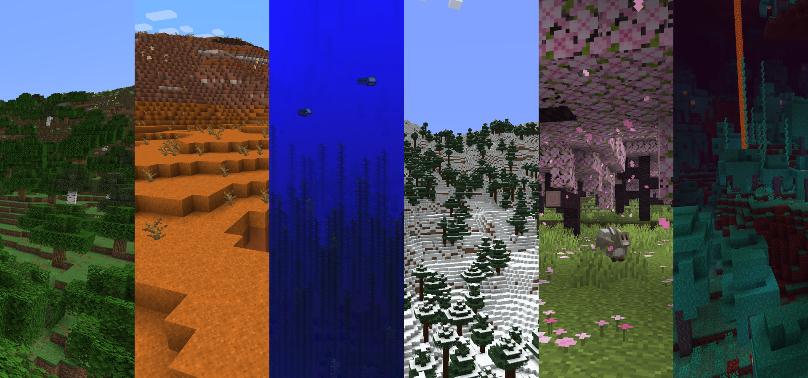
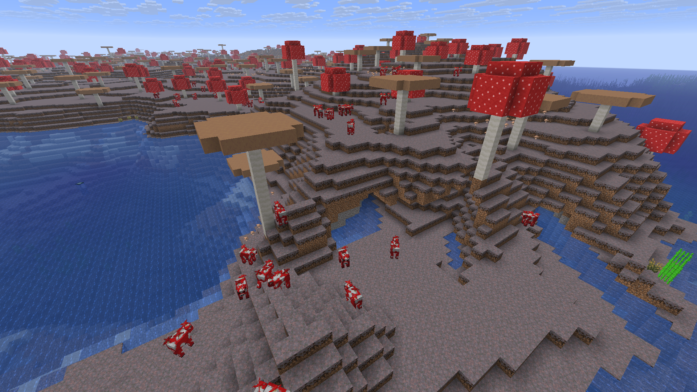
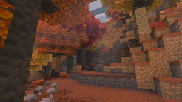
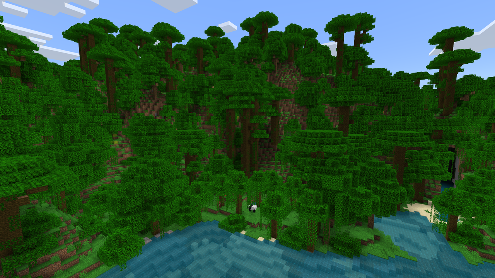

"Explore os biomas. Conheça a vida. Sobreviva ao mundo."
"Explore os biomas. Conheça a vida. Sobreviva ao mundo."

Um bioma é uma região do mundo de Minecraft definida por um conjunto próprio de características
ambientais. Cada bioma possui elementos que ajudam a diferenciá-lo dos
demais, como o tipo de terreno,
vegetação,
criaturas que podem aparecer, temperatura, nível de umidade, cores da grama e da água, condições climáticas
e disponibilidade de
determinados recursos.
Essas diferenças fazem com que o mundo seja dividido em diversos ambientes naturais, como florestas,
desertos, savanas, pântanos, montanhas, planícies, oceanos e regiões
congeladas. Além da aparência,
cada bioma pode influenciar diretamente a exploração e a sobrevivência do jogador, já que determinados
animais, plantas, estruturas e recursos
podem ser encontrados com maior facilidade — ou exclusivamente
— em certas regiões.
O bioma de cada local é definido durante a geração do mundo. Isso significa que sua classificação não depende
apenas dos blocos presentes naquele terreno. Mesmo que uma
grande área seja completamente modificada
para se parecer com outro ambiente, ela continuará pertencendo ao bioma definido originalmente
A quantidade de biomas varia entre as edições do Minecraft. Na Edição
Java
, existem 66 biomas: 55 na Superfície, 5 no Nether, 5 no End e 1 utilizado apenas em um modelo
específico de mundo plano. Já na
Edição
Bedrock
, existem 88 biomas registrados: 55 na Superfície, 5 no Nether, 1 no End e 27 que não são utilizados
normalmente durante a
geração dos mundos.
Esses biomas são utilizados principalmente na geração de oceanos e campos de cogumelos. São regiões
grandes e abertas, compostas quase inteiramente por água até a altura Y=63.
O fundo do mar
apresenta diferentes formas de relevo, como pequenas montanhas e planícies, geralmente formadas por
blocos de
cascalho, terra e areia.
|
|
|
|
|---|---|---|
|
|
O Oceano Quente é uma variante oceânica de águas azul-esverdeadas claras. Seu fundo é formado
principalmente por areia e coberto por ervas marinhas, mas não possui algas gigantes. O Oceano Quente não possui uma variante profunda própria, embora seu terreno possa atingir profundidades semelhantes às dos oceanos profundos. |
 |
|
|
Os Campos de Cogumelos são um bioma raro, formado por ilhas geralmente planas cuja superfície é
coberta por micélio. Eles costumam aparecer isolados de outros biomas e sempre próximos a regiões de oceano profundo, podendo variar bastante de tamanho. |
 |
Os biomas arborizados são regiões com grande presença de vegetação, especialmente árvores, flores e
gramíneas. Esses ambientes costumam apresentar paisagens mais verdes e
densas, oferecendo bastante
madeira e outros recursos naturais ao jogador.
|
|
|
|
|---|---|---|
|
|
Uma floresta com vegetação de choupos sobre uma grama de tom marrom-alaranjado com arbustos
vermelhos. O bioma também possui diversos cogumelos, árvores caídas únicas e terra infértil. Raposas e coelhos geram neste bioma, juntamente com variantes frias de animais. |
 |
|
|
Um bioma florestado denso que inclui muitas plantas e recursos diferentes. Árvores da selva e
mega árvores da selva são comuns, com as megas árvores tendo troncos de 2x2 blocos de espessura e podendo atingir até 31 blocos de altura. Carvalhos extravagantes são comuns, e arbustos da selva frequentemente cobrem grande parte do solo da floresta. |
 |